Keynote / 2026
Why am I speaking about this?
A trajectory, not a CV
Not as self-claim — as context
Computer music trained me to think beyond conventional musical notation — to compose with systems, processes, algorithms, spatial sound, synthesis, interaction, and uncertainty.
Material #1
Material #2
There is solidarity between scientific development and the progress of music. Throwing new light on nature, science permits music to progress — or rather to grow and change with changing times — by revealing to our senses harmonies and sensations before unfelt. On the threshold of beauty, science and art collaborate.
Material #3
Working definition
Computational Arts is not simply art made with computers.
It is a way of composing systems:
sound systems, visual systems, interactive systems,
social systems, and now intelligent systems.
After Michel Chion
My extension
Current paper
Case study 01
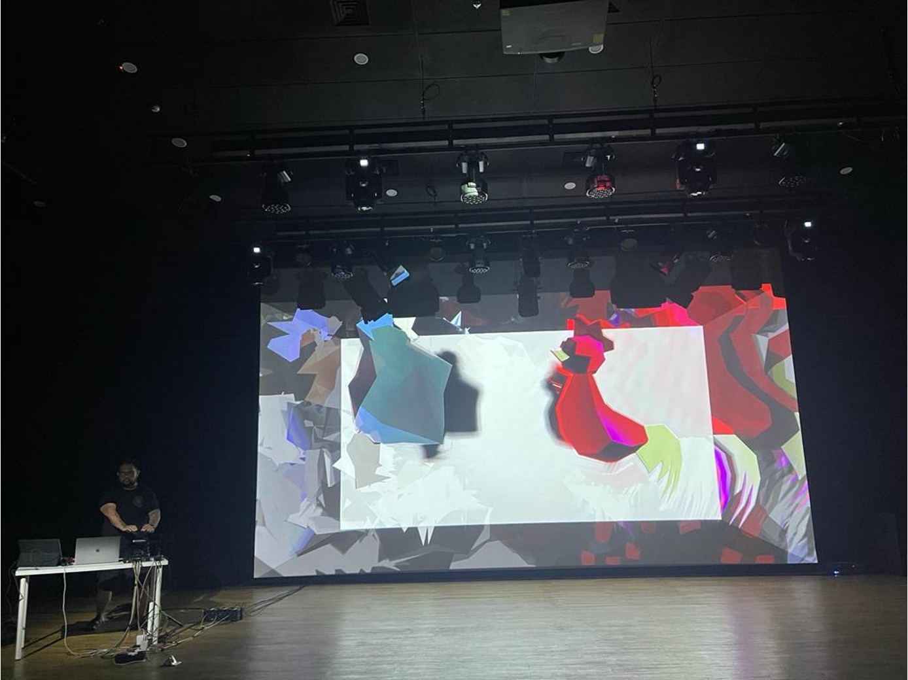
In performance · AIMC 2024, Oxford
From composing fixed AV material
→ to composing interactive audiovisual behaviour.
Case study 02
From the work
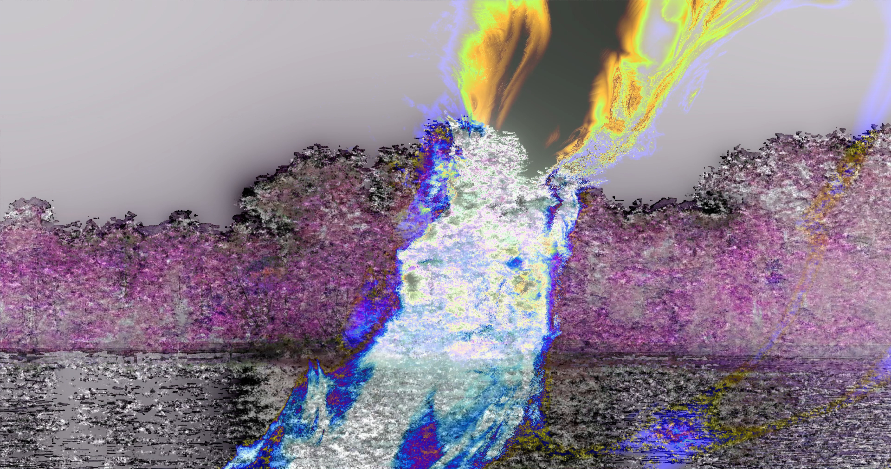
Electroacoustic listening,
visual imagination,
ecological anxiety — held together.
Case study 03
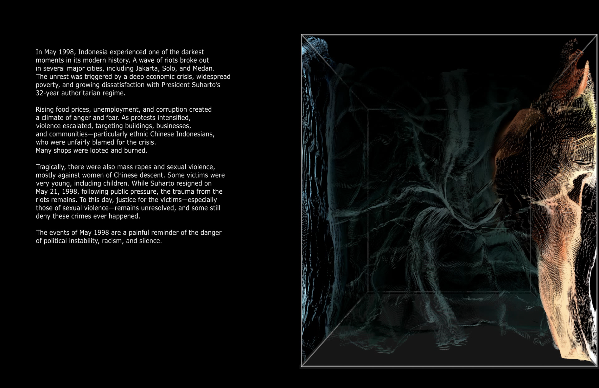
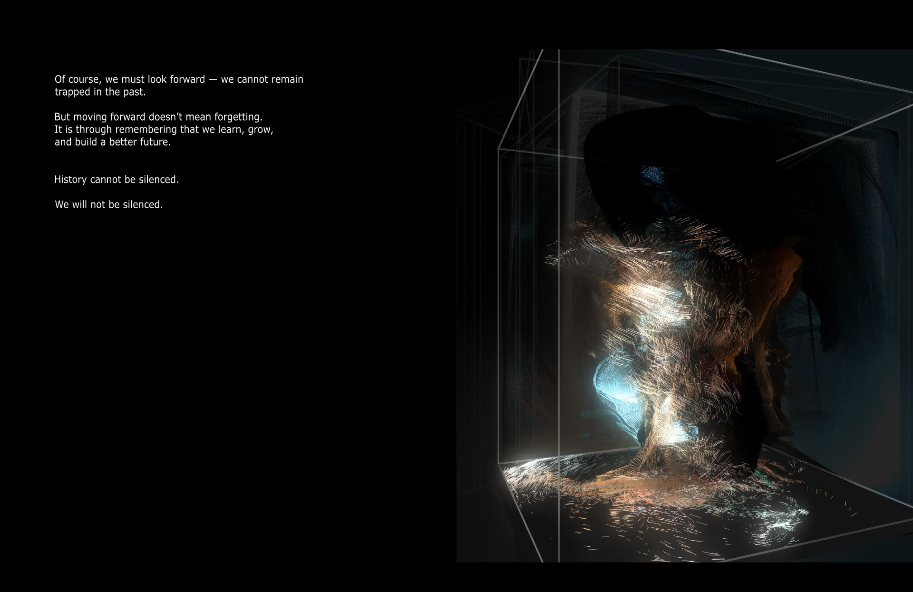
Text does not describe the audiovisual work.
It composes how the audiovisual work is perceived.
Case study 04 · with Wing Hei Cheryl Hui
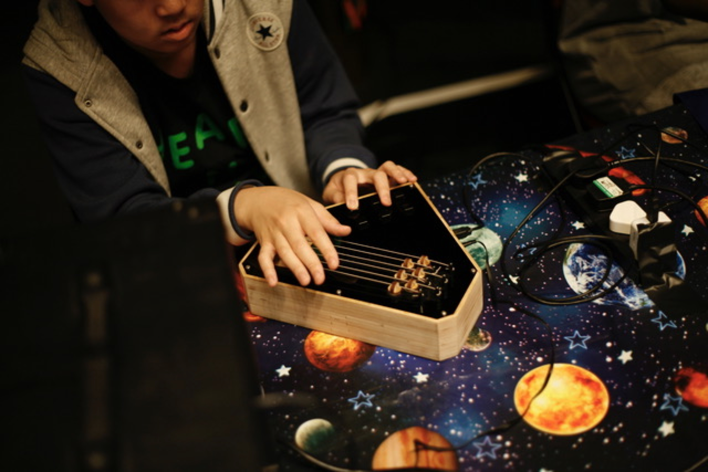
One sensing tile
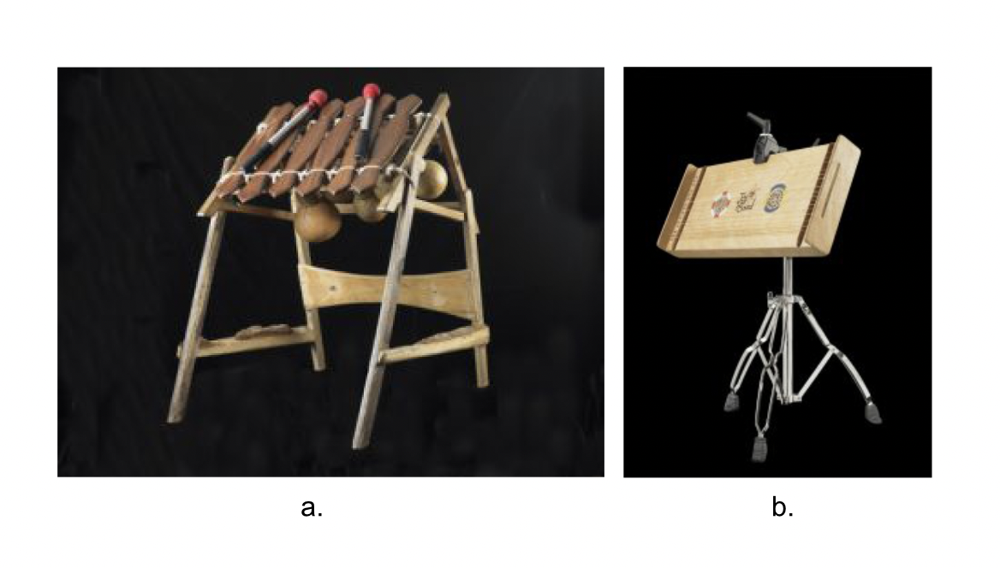
End-to-end haptic–audio latency:
≈ 7 ms average, < 12 ms max.
Each tile is an independent network node — reconfigurable across tabletops, wheelchair trays, or floors. The instrument is wherever the ensemble decides it should be.
Six active threads · 2026
06A · with Shuang Li
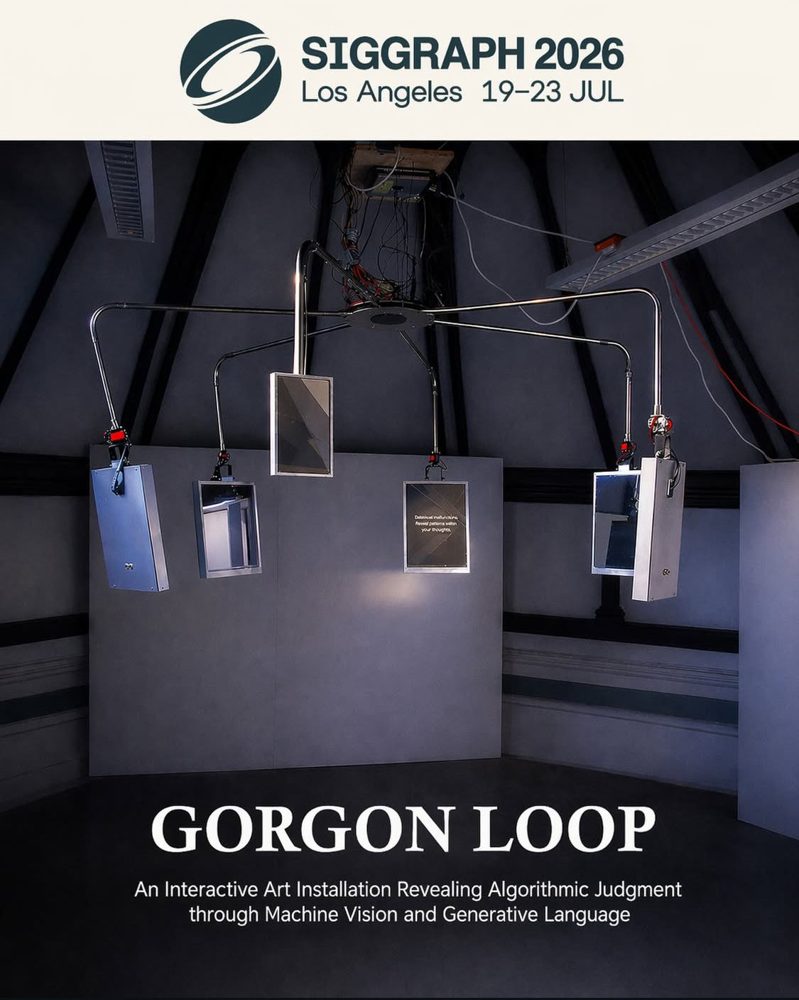
06B · with Fioretta Zhang
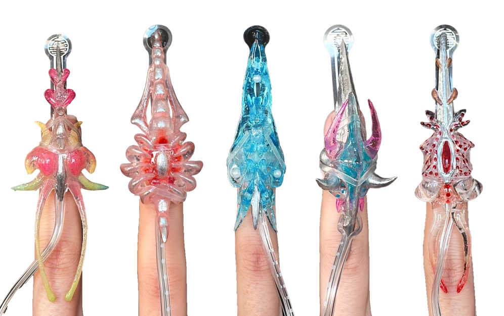
06C · with Federico (Fede)
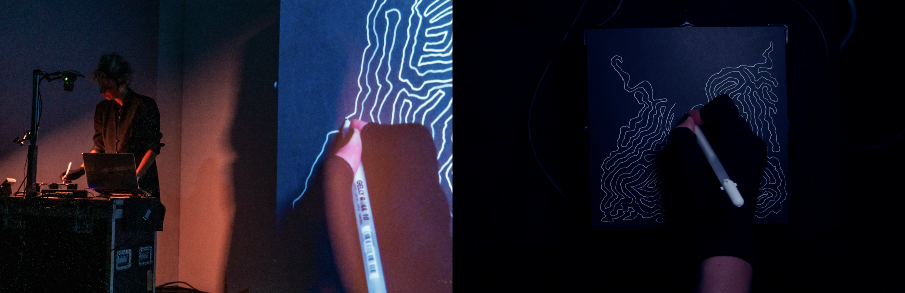
[TODO · placeholder — awaiting Fede's draft.]
06E · with Christian Berg + Bin Youn
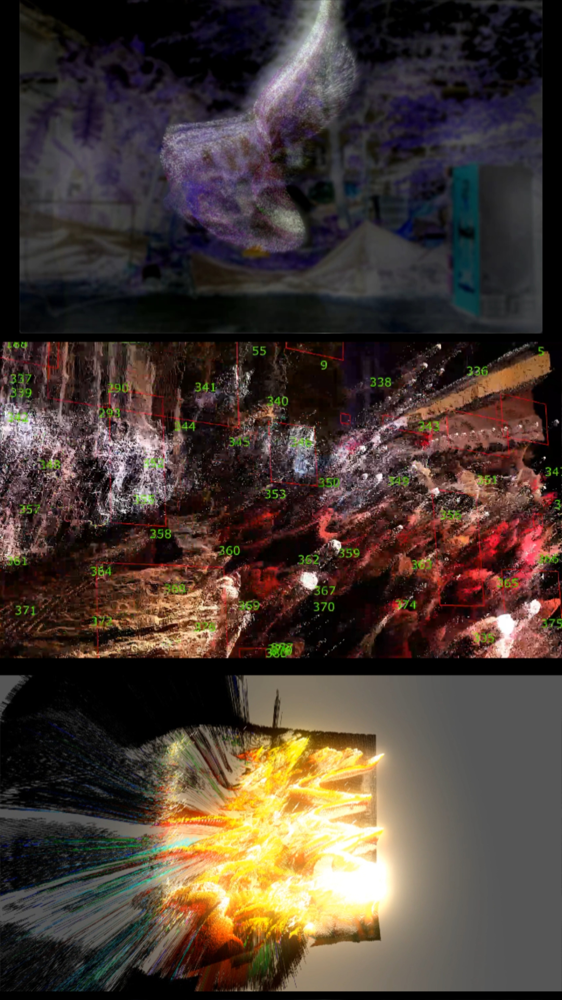
Triangulating urban change through pixel-to-particle translation: a triangular prism installation exploring Ho Chi Minh City through point cloud aesthetics and particle simulation.
06F · with Zhiqi Wang
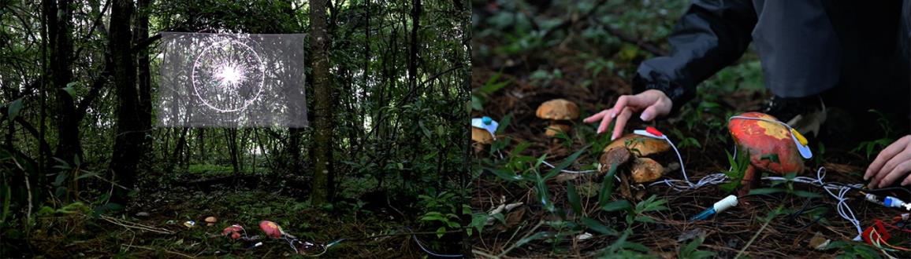
An interactive installation juxtaposing fungal electrical signals with human brainwaves — transforming both into non-narrative language and symbols. A “third space” for interspecies translation, non-anthropocentric, posthuman.
06G · open-source · MIT
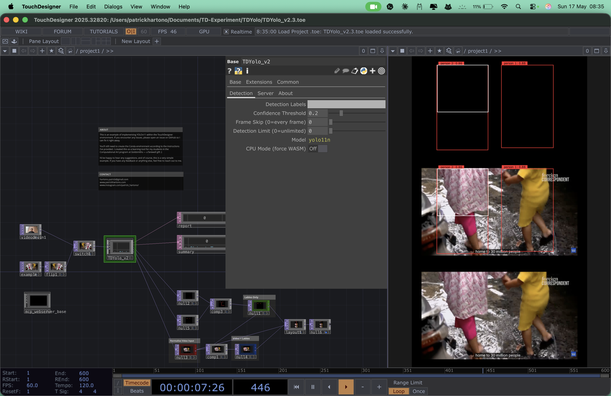
A drop-in .tox component that runs YOLOv11
inside an embedded headless browser — inference via WebGPU (WASM fallback),
zero Python environment, zero pip install. Real-time bounding
boxes and class labels flow straight into the TouchDesigner node graph.
What ties it all together
My current work moves toward machine perception — how computational systems see, classify, distort, and respond to human presence — and how artistic research can hold that conversation honestly.
A long tradition continued
Using unfamiliar systems, non-conventional methods, algorithms, randomness, synthesis, and computation to move beyond conventional musical thinking — that is exactly what electroacoustic practice has always done.
Honestly
When these AI tools appeared, I felt something close to a Tony Stark moment. Things I could not previously do — because of time, technical limitation, or lack of specific knowledge — suddenly became prototypable.
But — and it is a serious but
When everything becomes possible,
direction becomes harder.
The shift
Section 08 · A working equation
Why both halves matter
The future belongs to people who can think through making.
I am not pretending to be an expert
Quantum may give us
new metaphors
for thinking about reality,
uncertainty, and composition.
Opening claim
Indonesia is full of creative potential.
But potential alone is not an ecosystem.
The shape of the gap
A delicate point
"I can study overseas."
"I am here to build knowledge, discipline, methods, ethics, and an ecosystem."
A careful note
The question is not whether Indonesia has creative talent.
It does.
The question is whether we can build the systems, cultures, and institutions
that allow that talent to mature into expertise.
Where this leaves us
We are entering a moment where sound, image, text, AI, and computation
are no longer separate tools. They are becoming
one expanded field of creative systems.
The task for artists is not only to use these systems — but to
understand them, question them, and compose with them responsibly.
— Final statement —
All sources referenced in this deck
Now